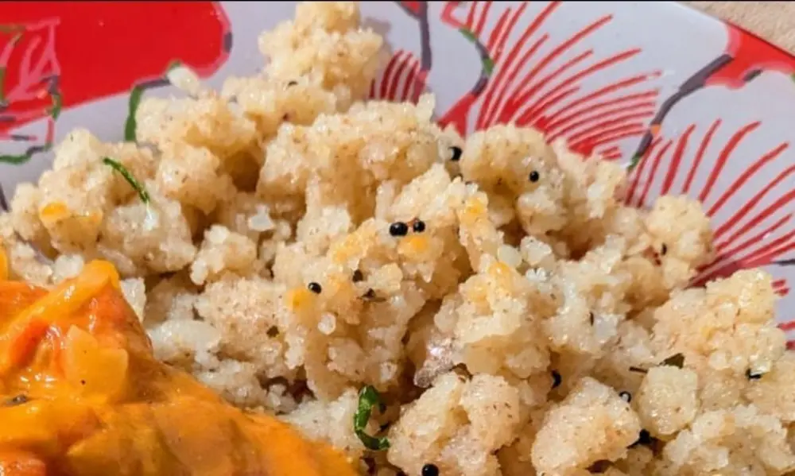

Recipe | Mamma’s Upmav

Mamma’s Upmav
Ingredients
For 1 person:
- 1 cups of rava (semolina) roasted
- 1 ½ cups of water
½ tsp salt
¼ cup onion chopped
- 1-2 green chillies chopped
- ¼ inch ginger chopped
- 1 small sprigs Curry leaves chopped
- ½ tsp mustard seeds
- 1 dry red chilli (not necessary)
Steps
- Heat 1 tbsp of oil and ½ tbsp ghee in a wok.
- Splutter mustard seeds and dry chilli.
- Toss onions, ginger, green chillies and curry leaves.
- Add water and salt and bring to a boil.
- Add the rava and stir continuously till slurry.
- Cover with a lid till soft and cooked.